What you need to know (specification)
- 1.1understand how living organisms share the following characteristics: they require nutrition; they respire; they excrete their waste; they respond to their surroundings; they move; they control their internal conditions; they reproduce; they grow and develop
- 1.2describe the common features shown by eukaryotic organisms: plants, animals, fungi and protoctists
- 1.3describe the common features shown by prokaryotic organisms such as bacteria
- 1.4understand the term ‘pathogen’ and know that pathogens may include fungi, bacteria, protoctists and viruses
About the IGCSE Biology course (papers, grades, topics)
Paper 1 (4BI1/1B): 2 hours, 110 marks, 61.1%. Core content (not in bold). Multiple-choice, short-answer, calculations and extended open-response questions; calculator allowed.
Paper 2 (4BI1/2B): 1 hour 15 minutes, 70 marks, 38.9%. Core content including content in bold. Separate Biology only.
Double Award (Science): you sit just paper 1, along with the equivalent papers in chemistry and physics.
Assessment objectives: AO1 knowledge with understanding 38–42% · AO2 application, analysis and evaluation 38–42% · AO3 experimental skills, analysis and evaluation of data and methods 19–21%. Grades 1–9 (9 is the best).
Topics: 1 Nature and variety of living organisms · 2 Structures and functions in living organisms · 3 Reproduction and inheritance · 4 Ecology and the environment · 5 Use of biological resources.
1a Characteristics of living organisms 1.1
All living organisms, from simple bacteria to plants and animals, carry out the same eight life processes. Remember them as MRS C GREN:


Watch life processes happening
Think about it: alive or not?
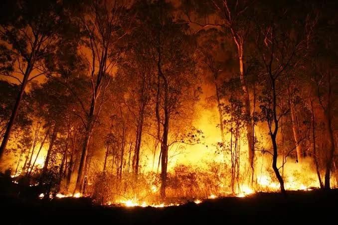
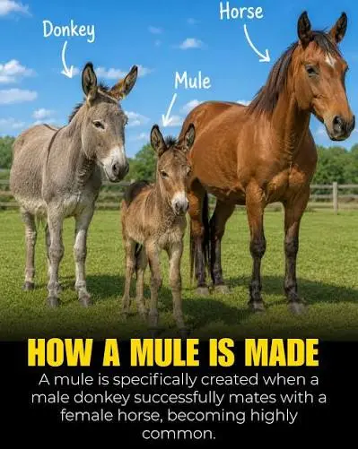
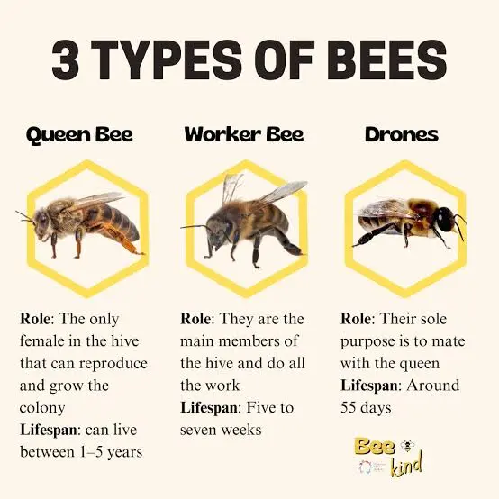

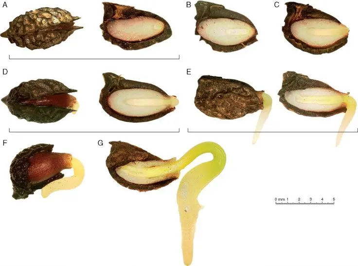

Answers to discuss
Fire isn’t alive: it isn’t made of cells and doesn’t do all eight processes (no reproduction of offspring, no excretion, no sensitivity). Mules and worker bees are alive: each one is made of cells and does the other processes; reproduction is a process of the kind of organism, not every single individual. Growth and development can mean big changes in form (metamorphosis, germination, a fetus developing).
True or false?
 GameMRS C GREN gamewordwall.net ↗
GameMRS C GREN gamewordwall.net ↗
Are jellyfish alive? 1.1

There are over 2000 types of jellyfish around the world. Jellyfish swim by rhythmic pulsations of the umbrella. The tentacles on a jellyfish are covered with millions of stinging cells. Jellyfish usually feed on small fish that get caught in their tentacles or sometimes even other jellyfish.
Jellyfish take oxygen into their cells directly from the water around them. Jellyfish don’t actually have brains but they do have something called a nerve net which can coordinate responses. Most jellyfish release sperm or eggs directly into the water around them. Jellyfish have no blood, bones or hearts. But some of them can do incredible things like glow in the dark.
Jellyfish are some of the oldest living creatures on Earth and have probably been around on the planet for over 600 million years. Jellyfish numbers are increasing as they are one of the few living organisms that are thriving with warmer, more acidic oceans.
Show mark scheme
Show mark scheme
Show mark scheme
1b Variety of living organisms 1.21.3
All living organisms can be classified into groups based on their features. In Edexcel IGCSE Biology there are 5 kingdoms: plants, animals, fungi, protoctists and bacteria. Viruses are non-living, so they are classified separately.
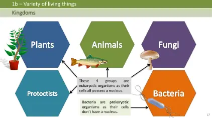
Prokaryotic: cells have no nucleus: bacteria.


Explore the kingdoms
Choose a group to see its cells and features. The drawings change each time, so you get used to cells looking a little different.
All the groups at a glance
| Plants | Animals | Fungi | Protoctists | Bacteria | |
|---|---|---|---|---|---|
| Cells | Multicellular | Multicellular | Mostly hyphae; some single-celled | Mostly single-celled | Single-celled |
| Nucleus | Yes | Yes | Yes (many in each hypha) | Yes | No: circular chromosome + plasmids |
| Cell wall | Cellulose | None | Chitin | Some | Yes (peptidoglycan) |
| Chloroplasts | Yes | No | No | Some (e.g. Chlorella) | No (a few photosynthesise) |
| Feeding | Photosynthesis | Eat other organisms | Saprotrophic | Varies | Mostly feed on other organisms |
| Carbohydrate store | Starch / sucrose | Glycogen | Glycogen | – | – |
| Examples | Maize, peas, beans | Humans, housefly, mosquito | Mucor, yeast | Amoeba, Chlorella, Plasmodium | Lactobacillus, Pneumococcus |
Plants 1.2
- They are multicellular.
- Autotrophic: make their own food by photosynthesis.
- Generally unable to move from one place to another.
- They do not have nervous coordination.
- Cells have cellulose cell walls and chloroplasts containing chlorophyll.
- Store carbohydrate as starch or sucrose.
- Examples: flowering plants such as a cereal (maize) and a herbaceous legume (peas or beans).

The variety of plants
Click a photo to see it bigger. Note: in the IGCSE’s five kingdoms, single-celled algae such as Chlorella are protoctists; some biologists group green algae with plants.

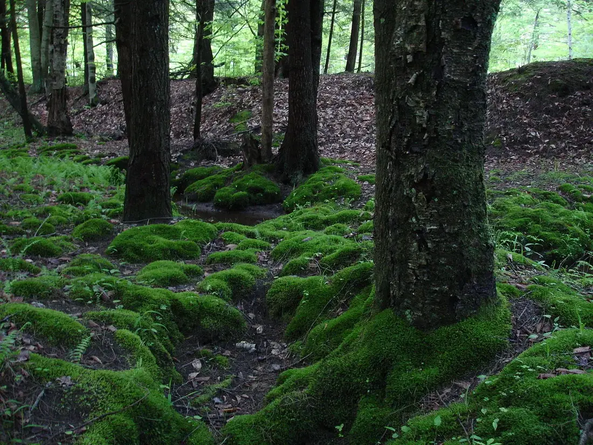


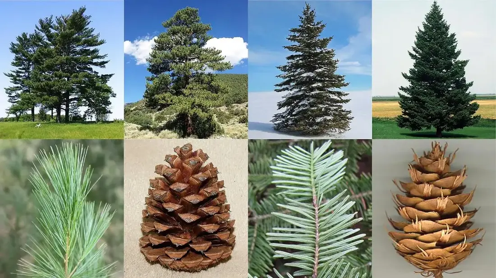
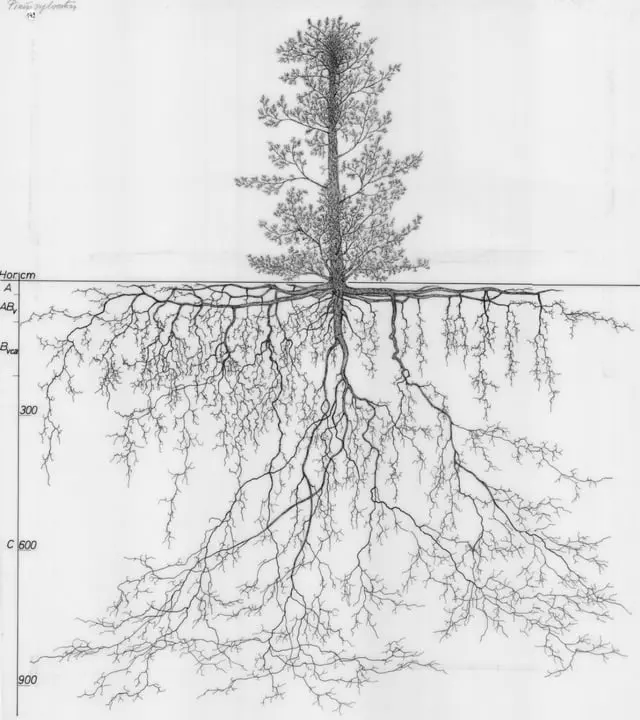


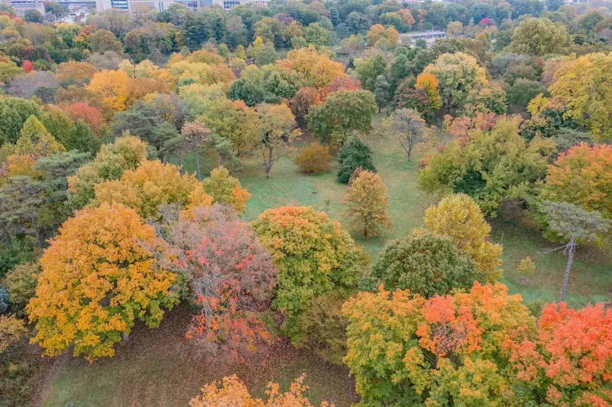


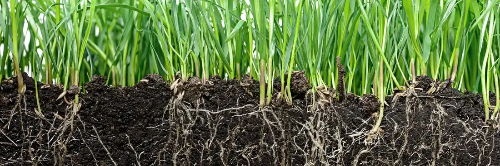
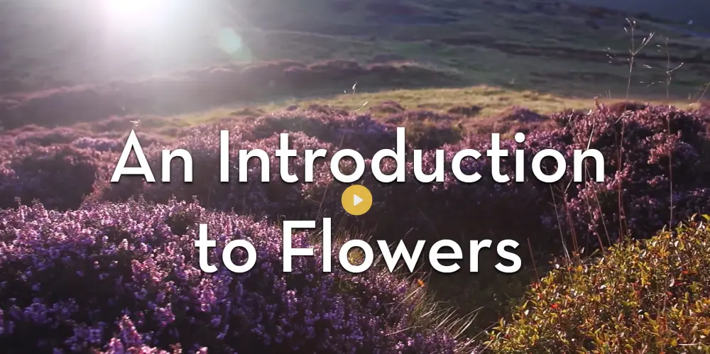
InteractiveAn introduction to flowerslearn.genetics.utah.edu ↗Animals 1.2
- They are multicellular.
- Heterotrophic: get nutrition by feeding on other organisms.
- Capable of movement from one place to another.
- Usually have nervous coordination.
- No cell wall and no chloroplasts, so they do not photosynthesise.
- Often store carbohydrate as glycogen.
- Examples: mammals (humans) and insects (housefly, mosquito).


Spotlight: the Greenland shark
The Greenland shark lives in the cold, deep water of the North Atlantic and Arctic Oceans. It grows about 1 cm a year and can live for several hundred years, longer than any other known vertebrate. Many carry a parasite attached to their eyes. In Iceland its meat is fermented and dried to make hákarl, because the fresh meat is poisonous.

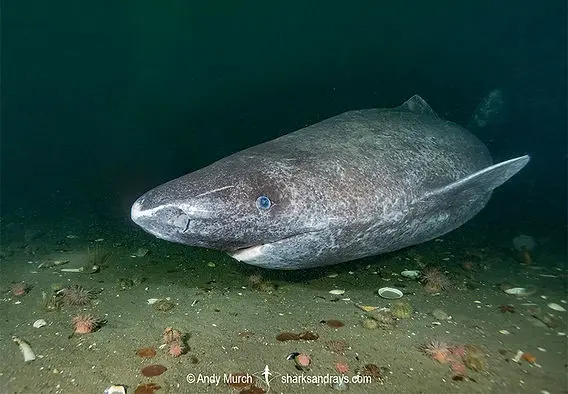
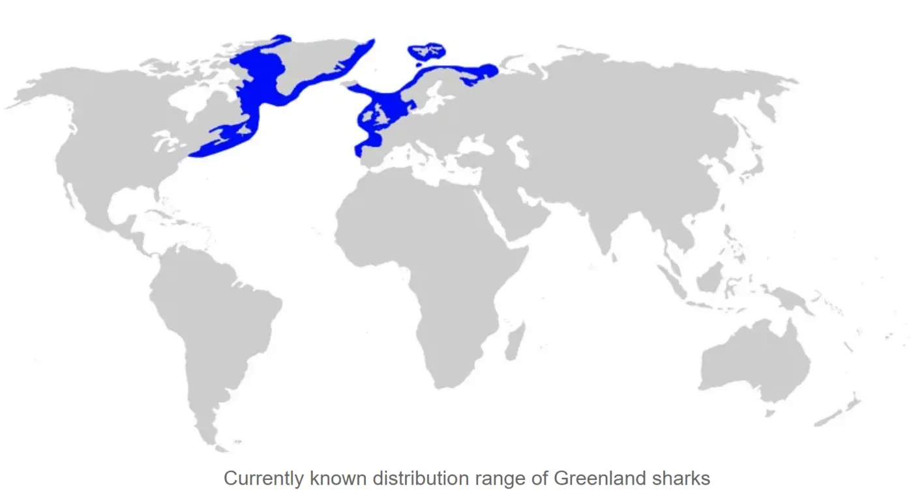
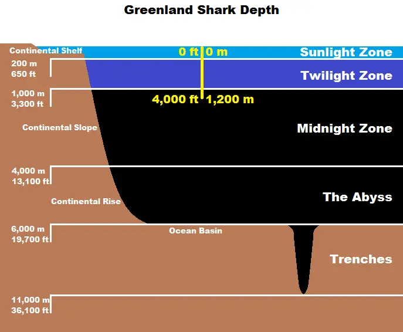


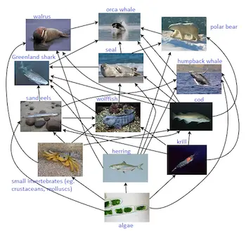

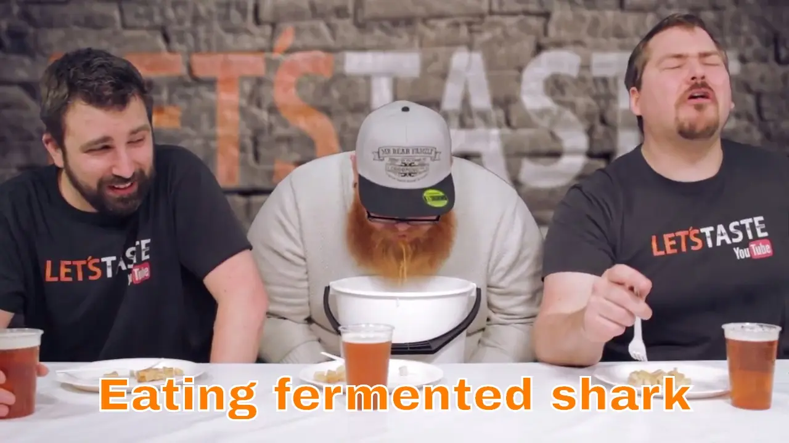

Fungi 1.2
- Can be multicellular or single-celled (yeast).
- Cell walls made of chitin.
- Body usually a network of fibres called a mycelium, made of hyphae which have many nuclei.
- Feed by saprotrophic nutrition: they secrete digestive enzymes onto food (extracellular digestion) and absorb the products.
- Store carbohydrate as glycogen.
- Cannot photosynthesise.

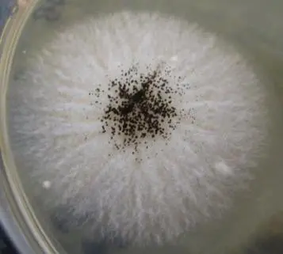
Yeast and Mucor photos: By Bob Blaylock, CC BY-SA 3.0 · source; By Esv, CC BY-SA 3.0 · source

Mycelium: the hidden network
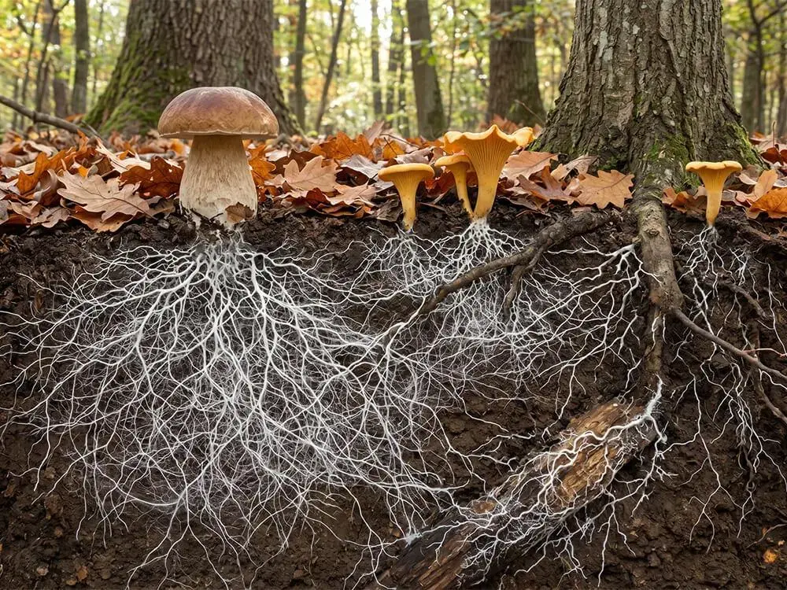
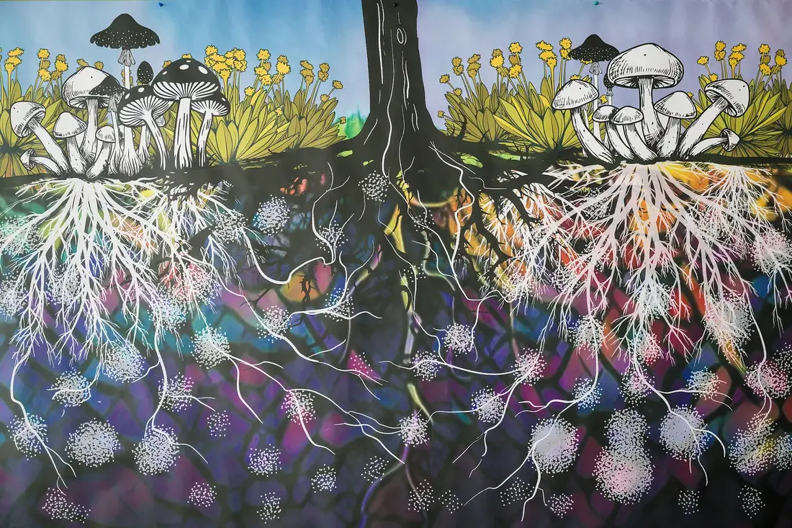


 InteractiveSPUN Underground Atlas: map of fungal networksspun.earth ↗
InteractiveSPUN Underground Atlas: map of fungal networksspun.earth ↗
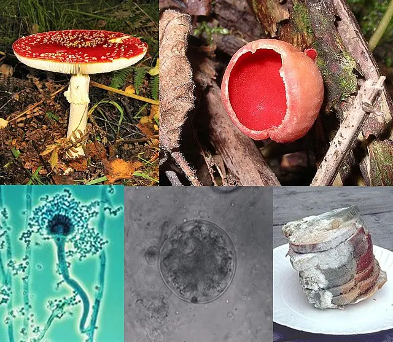


Protoctists 1.2
- A strange collection of simple organisms that don’t fit into the other groups, so often called the “dustbin” kingdom.
- Microscopic and mostly single-celled.
- Some are more like animals, some more like plants.

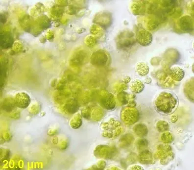
Chlorella: By Picturepest, CC BY 2.0 · source
A pathogenic protoctist: Plasmodium causes malaria.
 VideoAmoeba eating another organismyoutube.com ↗
VideoAmoeba eating another organismyoutube.com ↗


Bacteria 1.3
- Microscopic, single-celled, with no nucleus (prokaryotic).
- Have a cell wall (made of peptidoglycan), cell membrane and cytoplasm.
- Have one circular chromosome of DNA.
- Some contain plasmids (small loops of DNA).
- Some have a capsule or slime layer (extra protection, e.g. against drying out or toxins).
- Some species have flagella for movement.
- Most feed off other living or dead organisms; some can photosynthesise.

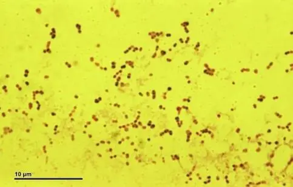
Pneumococcus, causes pneumonia">Both: By Doc. RNDr. Josef Reischig, CSc., CC BY-SA 3.0 · source, source 2
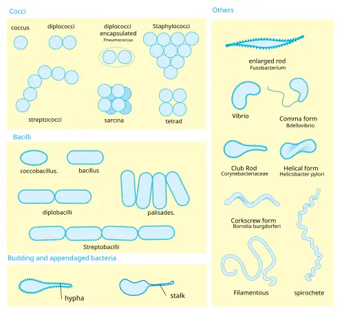
 VideoBacteria moving towards foodyoutube.com ↗
VideoBacteria moving towards foodyoutube.com ↗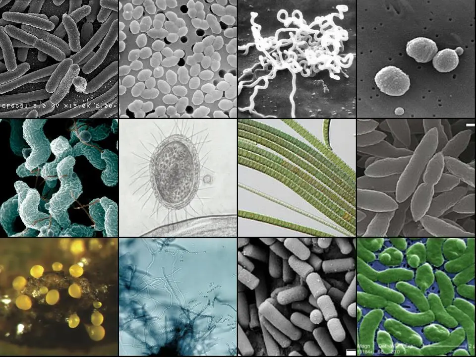
Inside a bacterium: David Goodsell’s paintings


 GalleryDavid Goodsell’s gallery of molecular paintingspdb101.rcsb.org ↗
GalleryDavid Goodsell’s gallery of molecular paintingspdb101.rcsb.org ↗
Pathogens 1.4
 VideoWhat is a pathogen? Communicable diseaseyoutube.com ↗
VideoWhat is a pathogen? Communicable diseaseyoutube.com ↗
| Pathogen | Type | Disease | |
|---|---|---|---|
| Trichophyton | Fungus | Athlete’s foot |  |
| Vibrio cholerae | Bacterium | Cholera · video ↗ | 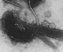 |
| Plasmodium | Protoctist | Malaria · video ↗ |  |
| Influenza virus | Virus | Flu · video ↗ | 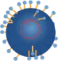 |
Viruses 1.4
- Not made of cells. Basic structure: genetic material (DNA or RNA) surrounded by a protein coat.
- Not considered alive, because they don’t do MRS C GREN.
- Much smaller than bacterial cells.
- Are parasites: they can only reproduce inside living cells, harming the host.
- Can cause disease in organisms of any kingdom.
- Come in a wide variety of shapes and sizes.


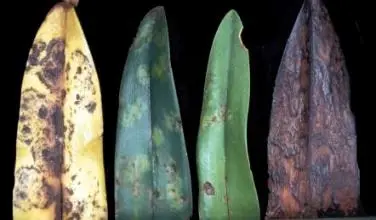

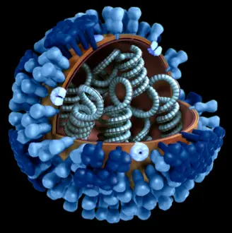
Viruses at work: David Goodsell’s paintings
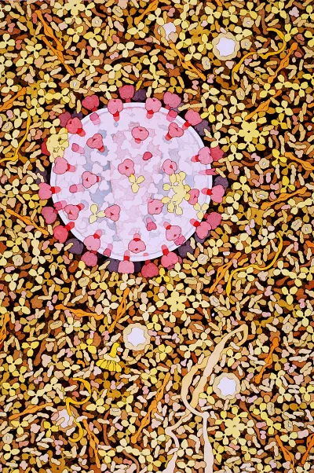
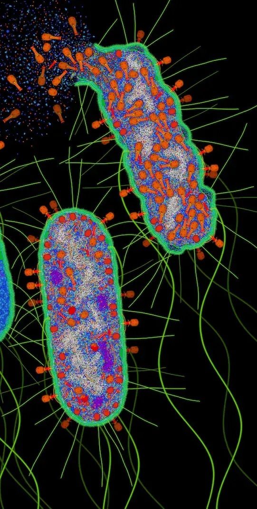
E. coli cell, destroying the cell’s DNA (purple) and forcing it to make new viruses. Then the cell bursts, releasing hundreds of new phages.">
How big?

Practice
True or false?
Which group?
Exam-style question: complete the table [5]
| Kingdom | Carbohydrate store | Cell wall | Nucleus present |
|---|---|---|---|
| Animal | …… | …… | Yes |
| …… | Starch | Cellulose | Yes |
| Bacteria | Glycogen | Peptidoglycan | …… |
| Fungi | Glycogen | …… | Yes |
Show mark scheme
Animal: glycogen, none · Plant · Bacteria nucleus: no · Fungi cell wall: chitin